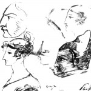

К 210-летию А.С. Пушкина!
Нынче нашему городу исполняется 220 лет, А.С. Пушкину – 210, а Пушкинскому клубу — 20 лет. Кроме того, этот год объявлен еще и Международным годом астрономии. Последнее стимулировало создание авторами, директором Николаевской обсерватории Г.И. Пинигиным и С.Ф. Ераль (Франция), прямым потомком первого астронома обсерватории К.Х. Кнорре, книги «Династия астрономов Кнорре», издание которой готовит Ирина Гудым. Неизвестные ранее данные, приведенные в этой книге, позволили по-новому взглянуть на объявленную здесь тему. Многие исследователи считают, что с прочтением всех черновиков и других прямых свидетельств о Пушкине, пушкиноведение как наука себя исчерпала. На самом деле это далеко не так, ибо именно изучение обстоятельств жизни пушкинского окружения заставляет нас переосмысливать ранее сделанные выводы о жизни и творчестве поэта.
Известно, что во время южной ссылки Пушкина в июле 1823 г. перевели из Кишинева в Одессу в канцелярию вновь назначенного генерал-губернатора Новороссийского края М.С. Воронцова, а 31 июля 1824 г. он был сослан в Михайловское, подальше от моря. Постепенно выяснилось, что Одесский год Пушкина был и Николаевским. Более того, Пушкин был сослан в Михайловское из Одессы именно из-за тайной отлучки в Николаев на яхте-бриге «Утеха», детали которой описал в 1831 г. в «Сказке о царе Салтане». Есть множество свидетельств тому, что Пушкин пропадал на кораблях Черноморского флота, пил с моряками и ночевал у них. Военно-морской гаванью в Одессе командовал, присланный из Николаева, грек венецианской службы, капитан 2-го ранга и комиссионер, А.Ф. Сильво, с которым Пушкин стрелялся на дуэли и которого он вывел под благозвучным именем Сильвио в своей повести «Выстрел». В Одесском порту с мая по ноябрь стояли на посту брандвахтенный корвет «Шагингирей» и карантинная бригантина «Волга», которые зимовали в Николаеве. Удалось найти в архиве ВМФ Санкт-Петербурга шканечный журнал «Шагингирея» за 1823 г., в котором делались отметки о состоянии погоды на каждый день, а также о приходе и отходе кораблей. Из послужных списков в том же архиве, а также из многотомного «Общего морского списка» можно было определить, кто из морских офицеров-николаевцев плавал на этих кораблях, их было более 60.
Кроме того, в Николаеве с 1805 г. жила семья В.И. Даля, двое братьев Владимир и Карл служили с 1819 г. здесь мичманами Черноморског флота и плавали на кораблях. Сюда из Дерптского универсистета по просьбе А.С. Грейга и по рекомендации В.Я. Струве 7 июля 1820 года был назначен на должность астронома Черноморского флота 19-летний Карл Христофорович Кнорре (1801-1883). Летом 1822 г. из Севастополя в Николаев переехала, племянница В.А. Жуковского, А.П. Зонтаг. Ее муж, американец по происхождению Е.В. Зонтаг, служил капитаном яхты-брига «Утеха» Главного командира Черноморского флота и портов, вице-адмирала А.С. Грейга. Мать В.И. Даля, Юлия Христофоровна, владела пятью языками и обладала голосом европейской певицы. Особую любовь она питала, впрочем, как и Анна Петровна Зонтаг, к молодому Кнорре. Вот, например, что писала А.П. Зонтаг В.А. Жуковскому из Николаева 4 марта 1823 г.: «У нас здесь Кнорре, которого я очень люблю как за его достоинства, так еще и за то, что он знает всех вас моих». Последнее означает то, что К.Х. Кнорре был знаком с Жуковским и был свидетелем его трагической любви к Маше Протасовой в Дерпте, куда поэт наезжал с 1815 г.
Вокруг семей Даля и Зонтагов в Николаеве негласно действовал литературный кружок, в который, кроме Кнорре (замечу, что родным языком Кнорре и Далей был немецкий), входили: пятеро братьев украинцев Рогулей, итальянец П.И. Скорабелли, николаевец, моряк и поэт Е.П. Зайцевский, а также морской артиллерист из Килии Ф.И. Петров и А.И. Казарский, будущий герой Русско-Турецкой войны 1829 г. Все они без исключения писали стихи и высоко ценили талант Пушкина. Замечу, что, ради сближения с Пушкиным, летом 1824 г. Е.П. Зайцевский даже перевелся служить с брига «Мингрелия» на брадвахтенный корвет «Шагингирей».
Пушкин в это время начал писать эпохальный роман в стихах «Евгений Онегин», образы в котором брал из своего окружения. Причем, это не было описание одного какого-то лица, а все без исключения характеры его героев были полифоничными, т.е. списывались с нескольких людей. Но, толчок к созданию того или иного образа давало одно стержневое лицо, на образ которого уже потом нанизывались чертых других. Почти 30-летний опыт изучения «Евгения Онегина» позволил мне сделать вывод о том, что основу фабулы составила утаенная любовь поэта к Софье Станиславовне Потоцкой, которой собственно и посвящен роман в стихах. Еще в лицее Пушкин познакомился с сестрами Софией и Ольгой Потоцкими. Но София полюбила генерала П.Д. Киселева и в 1821 г. в Одессе вышла за него замуж. Пушкин, зная об этом, сходил с ума в Кишиневе. Именно поэтому в конце романа Татьяна выходит замуж за генерала. Но, жизнь Софии сложилась неудачно из-за своей сестры Ольги, которую Пушкин вывел в «Евгении Онегине» такой, какой она была в жизни, под своим именем, младшей сестрой, и с достоверным описанием ее черт лица и характера. Ольга была прямой противоположностью своей сестры, лекомысленна, ветренна и увлекала многих мужчин из своего окружения. Однажды София застала Ольгу объятиях своего мужа и гордая полячка его не простила, хотя и продолжала любить всю свою жизнь так, что больше ни за кого уже и не вышла замуж. У Кисилева было много завистников по службе в Тульчине, которые спровоцировали его дуэль 24 июля 1823 г. с подчиненным Мордвиновым, погибшим от его пули. Именно эти события, за последствиями которой Пушкин внимательно следил, и послужили поводом для включения дуэли Ленского и Онегина в роман «Евгений Онегин». После этого скандала Ольга была срочно обвенчана с Л.А. Нарышкиным в Одессе, кузеном которого был М.С. Воронцов. Пушкин присутсвовал на венчании и сделал в рукописи зарисовку портретов Ольги и Софии. В начале 1824 г. у Софии умер единственный сын в Одессе, она покинула мужа, Россию, и удалилась в Европу.
Но вернемся к Кнорре, личность которого послужила Пушкину стержнем в создании образа Ленского, и выясним: что же думал поэт о первом астрономе Черноморского флота? Вторым лицом, которое наполнило образ Ленского, по признанию многих пушкинистов, был поэт В.И. Туманский (1800-1860). В рукописях имеется рисунок Туманского на обороте 30 листа, выполненный Пушкиным 3-го ноября 1823 г. В связи с этим нужно выяснить, что же в образ Ленского вошло от Кнорре, а что — от Туманского?
{kind=link}
{kind=link}
Долгое время рисунок профиля К.Х. Кнорре не был атрибутирован. С подачи 6-томного собрания сочинений Пушкина в издании Брокгауза-Эфрона 1909 года он фигурировал как образ Ленского (рис. 1). Впервые отождествление было опубликовано в моей книге «Пушкин и Николаевский край» (Николаев, 2001). Но сравнение рисунка, выполненного в конце 1823 г., производилось мною с фото К.Х. Кнорре около 1871 г., когда он, выйдя в отставку и получив звание вице-адмирала, перебрался жить в Берлин. При создании вышеупомянутой книги у Сюзаны Эраль нашлось два портрета К.Х. Кнорре, выполненные нужно полагать в одно и то же время, что и рисунок Пушкина. Об этом свидетельствует сюртук и жабо. Один из них с изображением в полуфас показан на рис. 2, но здесь портрет развернут по горизонтали для удобства сравнения с рисунком Пушкина. Таким образом, удалось утвердиться в правильности отождествления рисунка поэта, как портрета К.Х. Кнорре. Профиль находится на обороте 35 листа рукописи №834, а рядом с ним записано стихотворение: «Туманский Фебу и Фемиде,/Полезно посвящая дни,/Дозором ездит по Тавриде/И проповедует Парни». Теперь нужно определить время, когда и где Пушкин и Кнорре могли познакомиться.
Из дел Адмиралтейства известно, что 29 апреля 1823 г. бриг «Мингрелия» был направлен из Николаева для обсервации берегов Черного моря с астрономом К.Х. Кнорре. На борту корабля находились также братья Карл и Владимир Даль, Е.П. Зайцевский, братья Рогули. 7 мая во время захода в Севастополь по приказу А.С. Грейга В.И. Даль был снят с борта и отослан в Николаев, где был отдан под суд, якобы за написание пасквиля на Ю.М. Грейг. Кнорре сошел на берег в Николаеве 5 сентября, а 13-го бриг отправился без него и прибыл в Одессу 15 сентября, а оттуда вышел в Николаев 24 сентября 1823 г. Приход брига «Мингрелия» особенно обрадовал поэта, поскольку это был первый корабль Черноморского флота, на котором Пушкин с Раевскими в ночь с 15 на 16 августа 1820 г. переплыл из Феодосии в Гурзуф. Именно в Одессе он познакомился с прибывшими на бриге поэтом Е.П. Зайцевским и К. Далем. Чаще всех в Одессу заходил катер «Сокол», на котором плавал А.И. Казарский. В рукописи Пушкина нашлось несколько его портретов, относящихся к этому времени, что говорит о знакомстве. С 23 по 26 сентября в Одессе находилась яхта-бриг «Утеха», которой командовал Е.В. Зонтаг. Он-то, вероятно, и предложил Пушкину проехаться на корабле к Анне Петровне Зонтаг в Николаев. Обстоятельства способствовали тайной отлучке поэта,- все начальство 26 сентября 1823 г. устремилось в Тульчин, где проводил смотр 2-й армии Александр I. И все было бы ничего, если бы Пушкин не проболтался личной осведомительнице царя К. Собаньской, за которой он волочился в то время. Пришлось и ее брать в поездку. Доказательства этому содержатся в рукописи поэта, где он зарисовал портреты Зонтага и Собаньской рядом с автографом стихотворения «Завидую тебе, питомкец моря смелый», содержание которого явно говорит о плавании. Из шканечного журнала «Шагингирея» выяснилось, что в это время установился штиль, в делах Адмиралтейства отмечено, что «Утеха» прибыла в Николаев только 8 октября. Штиль ломал все планы Собаньской, она могла не успеть к царю. Поэтому у Очакова Пушкина и Каролину свезли на берег, на перекладных они прибыли в Николаев 1 октября 1823 г., откуда она уехала в Тульчин, а Пушкин до 8 октября у А.П. Зонтаг стал дожидаться «Утеху». К.Х. Кнорре был в это время в Николаеве и невозможно себе представить, чтобы Зонтаг за всю неделю не пригласила астронома для знакомства с поэтом. Чтобы выяснить, о чем они могли говорить между собой, нужно обратиться к тому, чем был занят Кнорре в это время.
Из архивных дел Адмиралтейства известно, что под личным контролем вице-адмирала А.С. Грейга велось строительство Николаевской астрономической обсерватории на Спасском кургане, а К.Х. Кнорре вел наблюдения на личных приборах адмирала, преподавал в Штурманском училище и готовился к оснащению обсерватории. В делах Адмиралтейства отмечен Рапорт Начальнику Морского штаба №3940, кол. ассесора Кнорре от 9-10 июня 1823 г. «О позволении ему на путешествие в СПб., Дерпт, Кенисберг, Копенгаген, Берлин, Гота, Геттинген, Гринвич и Лондон, Париж, Мюнхен, Вену и Офен для посещения хронотических мастерских у художников». Затем началась бюрократическая волокита с Морским штабом о финансировании поездки. А.С. Грейг напомнил Штабу сколько денег он сэкономил для флота и просил решить этот вопрос. 29 января 1824 г. Грейг писал в Морской штаб: «Г. Кнорре не получая никак разрешения и страстно желая до отстройки обсерватории окончить путешествие за границу для приобретения всех нужных практических познаний к науке его относящихся, дабы и по сей части соответствовать ожиданиям начальства, но опасаясь, что преткновением к исполнениям желания его, есть назначение на тот предмет суммы, объявил мне готовность свою предпринять оный путь хотя на свой щет и даже пешком, прося убедительнейшее о скорейшем исходотайстве позволения путешествовать». Забегая вперед, отмечу, что заграничная поездка К. Кнорре, о которой он говорил Пушкину, началась в июне 1825 года и продолжалась до августа 1827 года. Во время этой поездки он посетил около 20 научных центров Европы, встречался с такими выдающими учеными, как Ф. Бессель, Энке, Титтель (ученик Гаусса), Дж. Гершель, Араго, Николаи и др., наладил с ними контакты и долгие годы переписывался. Один только этот перечень имен говорит о том, что в XIX веке в Николаеве не было более крупного ученого, чем К.Х. Кнорре. Кроме того, К.Х. Кнорре заказал самые лучшие приборы и выписал научные труды для обсерватории. Наверняка, своими мыслями о поездке, в том числе и в Германию, Кнорре поделился с Пушкиным при знакомстве.
Повидимому, Карл Христофорович произвел на поэта настолько сильное впечатление, что в своих стихах он с полной уверенностью записал о положительных результатах его предстоящей поездки в Европу в VI строфе 2-й главы: «С душою прямо геттингенской,/ Красавец, в полном цвете лет,/Поклонник Канта и поэт./Он из Германии туманной/Привез учености плоды:/Вольнолюбивые мечты,/Дух пылкий и довольно странный,/Всегда восторженную речь/И кудри черные до плеч». Другое указание на немецкое происхождение Ленского содержится в IX строфе: «Под небом Шиллера и Гете/Их поэтическим огнем/Душа воспламенялась в нем». В XII строфе Пушкин прямо назвал Ленского «полурусским». Правда, и Туманский был украинцем польского происхождения, но в то время Украина и Польша входили в состав России, и он не мог считаться полурусским, да и родным языком для него был русский. Вот еще характеристики, которые с полным основанием можно отнести к ученому больше, чем к поэту, в VII строфе: «…Его лелеяла надежда,/И мира новый блеск и шум/Еще пленяли юный ум./Он забавлял мечтою сладкой/Сомненья сердца своего;/Цель жизни нашей для него/Была заманчивой загадкой,/Над ней он голову ломал/И чудеса подозревал». Для любого ученого сомнения являются основным инструментом познания, равно как поиск истины есть целью жизни. Так что строфы VI-IX 2-й главы вполне можно отнести к К.Х. Кнорре.
Строфа Х, посвященная тому, о чем пел Ленский, как поэт, уже явно относятся к Туманскому. Более того, в ней стихи “Он пел разлуку и печаль/И нечто, и туманну даль,..” являются иносказательным указанием на Туманского. С его поэзией Пушкин был знаком с 1821 года, когда Туманский стал членом Вольного общества любителей Российской словестности, где состоял и Пушкин. В Одессу он прибыл летом 1823 г. вместе с Воронцовым. Так что, с Пушкиным они здесь служили вместе и часто могли встречаться. Бывал Туманский и в Николаеве, знаком был с николаевским поэтом Е.П. Зайцевским. Его стихи он направлял А. Бестужеву для публикации в «Полярной звезде». Можно с высокой долей вероятности утверждать, что зарисовка Пушкиным в Николаеве (доказательства этого приведем ниже) портрета Кнорре (рис.1) рядом с поэтическими строками о Туманском, явились поворотным моментом в наполнении образа Ленского, элементами судьбы поэта Туманского. Дело в том. что он был влюблен в Ольгу Нарышкину-Потоцкую и посвятил ей несколько стихотворений: «Гречанке», «К ней (Из Уланда)», Элегия («Как звонкое журчание Салгира»). Описание именин Татьяны в субботу в «Евгении Онегине», в точности попадает на «Татьянин день» в субботу 12 января 1824 г. Татьяной поэт назвал Софию именно за то, что она родилась в этот день. Известно, что графиня Е.К. Воронцова устроила в Одессе бал-маскарад, на котором были Пушкин, Туманский и Ольга Нарышкина-Потоцкая. Вот, что писал Туманский двоюродной сестре в г. Вознесенск 16 января 1824 г.: «…балы, вечера и другие забавы у нас продолжаются по-прежнему. Мы много резвились на маскараде, который сделала для нас графиня и в котором сама умно и щеголевато дурачилась, т.е. имела прелестное карикатурное платье и всех в нем интриговала. Я не очень люблю удовольствия сего рода. Однако, дабы не отстать от собратии, нарядился вместе с другими Арлекином и очень удачно сыграл свою роль». На страницах рукописи Пушкина, относящихся к этому времени сделаны зарисовки портретов Туманского в колпаке Арлекина (рис.3), Е. Воронцовой (перед ним) и О. Нарышкиной (над ним).
|  |
|
Рис. 3
|
{kind=link}
В XIII строфе Пушкин пишет о том, что Ленский «С Онегиным желал сердечно / Знакомство покороче свесть./Они сошлись. Волна и камень,/Стихи и проза, лед и пламень/Не столь различны меж собой./Сперва взаимной разнотой/Они друг другу были скучны:/Потом понравились; потом/Съезжались каждый день верхом/И скоро стали неразлучны». В XVI строфе поэт записал: «Меж ними все рождало споры/И к размышлению влекло:/Племен минувших договоры,/Плоды наук, добро и зло,/И предрассудки вековые,/И гроба тайны роковые,/Судьба и жизнь в свою чреду, Все подвергалось их суду». Все эти строки никак не могут быть соотнесены ни с поэзией, ни с чертами характера Туманского, ни даже с его собственным мнением о себе. Вот как закончил он только что процитированное выше письмо к своей двоюродной сестре: «…В театр хожу часто, но еще чаще сижу дома с добрыми приятелями, вспоминая прошедшее, уповая о будущем и кое-как сбывая с рук настоящее. Если я не имею теперь сильных глубоких наслаждений, я не имею и глубоких страданий, моя жизнь ручеек, то по гладкой земле, то по камешкам протекающий». Ф.Ф. Вигель в своих «Записках» (т.2, М., 1928, с. 215) так писал о Туманском: «Самодовольствие его, хотя учтивое, делало общество его не весьма приятным; ему нельзя было совсем отказать в уме; но, подобно фамильному имени его, он светился сквозь какой-то туман. Всегда бывал он пристоен, хладнокровен; иногда же, когда вздумается ему казаться веселым и он захочет сказать или рассказать что-нибудь смешное, никого как-то он не смешил. Его куда-то посылали, ему кое-что поручали, он что-то писал и казался не совсем праздным».
А вот, что пишут Г.И. Пинегин и С.Ф. Эраль о К.Х. Кнорре во время посещения им во Франции лекций знаменитого ученого Араго, и этот эпизод как нельзя лучше подтверждает строки Пушкина о том, что «Меж ними все рождало споры»: «Во время одной из своих лекций по астрономии, Араго обьясняя какую-то сложную формулу, вдруг запутался и должен был отложить решение на следующий раз. Тогда К. Кнорре, сидевший в публике, внимательно прослушав доказательство заметив ошибку в нем, встал и предложил возобновить лекцию. Араго охотно согласился. После того, как молодой иностранец блестяще решил проблему, изумленный и благодарный Араго пригласил его на обед к себе домой. Так началась между ними настоящая дружба и впоследствии длинная переписка до смерти Араго в 1853 году».
В связи с этим, все положительные строки Пушкина о Ленском следует отнести к К.Х. Кнорре, человеку целенаправленному, волевому и чрезвычайно талантливому. Но, здесь возникает вопрос: как часто довелось Кнорре встречаться с Пушкиным, чтобы он смог узнать его как личность? Во-первых, Пушкин говорил о том, что «гений с одного взгляда определяет истину» и ему вполне хватило бы и одной встречи. Но, все же поэт не зря писал в «Сказке о царе Салтане» о тайном посещении Гвидоном (Пушкиным) царства славного Салтана (г. Николаева) трижды: в виде комара, мухи и шмеля. В этом ему помогала Лебедь Белая (Е.К. Воронцова). О первом посещении Николаева на яхте «Утеха» с 1 по 8 октября 1823 г. мы уже сказали. Если обратиться к рукописи, которую заполнял в это время поэт, то можно найти на обороте листа 22 последнюю строфу 1-й главы, а рядом запись: 22 октября 1823 г., Одесса. Обычно поэт указывал город тогда, когда куда-то уезжал. Действительно, на обороте 25 листа мы видим рисунок тополя и подсчеты расстояния, также непременные атрибуты дороги. В левом верхнем углу уверенно можно атрибутировать, как, первый по времени появления, рисунок А.С. Грейга (рис.4) – он хорошо коррелирует с известным портретом вице-адмирала (рис.5).
{kind=link}
{kind=link}
Вероятно, Е.К. Воронцова посылала к нему поэта с какой-то личной просьбой в Николаев. И совсем уже доказательно то, что именно на этом листе сделана черновая запись, как явное свидетельство встречи с К.Х. Кнорре: «В свою деревню в ту же пору/Другой помещик прискакал/И столь же строгому разбору/В соседстве повод подавал/По имени Владимир Ленской/Душою школьник Геттингенской/Кудрявый пылкой в цвете лет…». Можно предположить, что Е.К. Воронцова 23 октября посылала Пушкина в Николаев с приглашением четы Грейгов на венчание своего родственника Л. Нарышкина с О. Потоцкой 1 ноября в Одессе. И это было второе общение Кнорре с Пушкиным в доме у А.П. Зонтаг, на лицевой стороне листа 28 помещен ее портрет (с учетом разницы в 30 лет сходство очевидно, см. рис.6 и 7) и строфа XIV. Это дает основание предположить, что в нашем городе поэт написал еще и VII-XIV строфы 2-й главы “Евгения Онегина” и пробыл здесь около недели. 1 ноября он уже точно был в Одессе на венчании Ольги Потоцкой, событие отмечено записью даты в рукописи и рисунком сдвоенных портретов сестер Потоцких. После этих разысканий можно утверждать, что пророческий рисунок Пушкина, находящийся на обороте 26 листа сделан в Николаеве (рис. 8). На нем поэт изобразил Казарского, Сильво, Фурнье, Карла Даля и Зайцевского (над рисунком сделана подпись заглавных букв фамилий изображенных: Q, S, F, D, Z) и топор, касающийся К. Даля и А. Казарского, которые позднее были отравлены в Николаеве. Появление рисунка, вероятно, связано с тем, что в это время николаевцам было известно решение суда над В.И. Далем – разжаловать в матросы, и они его сообщили Пушкину. Кроме того, поэт вполне мог у А.П. Зонтаг встретиться с К. Далем, Е. Зайцевским и обсудить с ними этот вопрос.
{kind=link}
{kind=link}
{kind=link}
{kind=link}
Появление портрета Кнорре на обороте листа 35 (рис.1), вероятно, было связано с третьим приездом поэта в Николаев вместе с Е.К. Воронцовой в конце ноября 1823 г. Возможно, ее в гости пригласила чета Грейгов, побывав в Одессе 1 ноября, а Пушкин уговорил взять его с собой. На лицевой стороне листа 35 поэт изобразил Воронцову в дорожном одеянии, а справа вверху начал автопортрет и зачеркнул (рис. 9). В ответственные моменты жизни он всегда как бы всматривался в себя. Но, вероятно, этот ответный визит длился не дольше 2-3-х дней. Пушкин, конечно же, останавливался у Зонтагов, над портретом Кнорре появился быстро схваченный профиль Анны Петровны. Попутчиком поэта в этой поездке, вероятно, был Туманский, который из Николаева поскакал в Тавриду «с дозором Фемиды проповедовать Парни».
Но этим встречи не ограничивались. Из дел Адмиралтейства известно, что К.Х. Кнорре в конце года ездил в Одессу за получением прибывших из Англии приборов, книг и, конечно, встречался с Пушкиным, который явно заинтересовал его как личность. Известно также, что 25 апреля 1824 г. А.С. Грейг с супругой навещал чету Воронцовых в Одессе, они вполне могли взять с собой Кнорре. В последние приезды в Николаев в конце мая 1824 г. «на саранчу» и при отъезде в Михайловское 1 августа поэт заезжал к Зонтагам только на ночевку, и вряд ли встречался с Кнорре.
Таким образом, с учетом этих исследований, можно утверждать, что Пушкин посещал наш город не менее 9-ти раз и написал здесь 22 строфы из «Евгения Онегина»!
Г.И. Пинегин и С.Ф. Эраль, отметив в своей книге, что К.Х. Кнорре здесь жил и работал в течение пятидесяти лет, подчеркнули, что «Вдали от научных центров и ученого общества он создал уникальную обсерваторию, которая, благодаря его усилиям внесла огромный вклад в развития Черноморского флота и края. Обладая колоссальной работоспособностью и целеустремленностью К.Х. Кнорре был единственным астрономом — руководителем и исполнителем, первопроходцем и пионером в решении важнейших задач развития науки и астрономии того времени». К этим справедливым словам, можно добавить еще и то, что наш город и потомки К.Х. Кнорре вполне могут гордиться той высокой оценкой, которую дал первому астроному Черноморского флота А.С. Пушкин в своем романе «Евгений Онегин».
А. Золотухин, председатель Пушкинского клуба